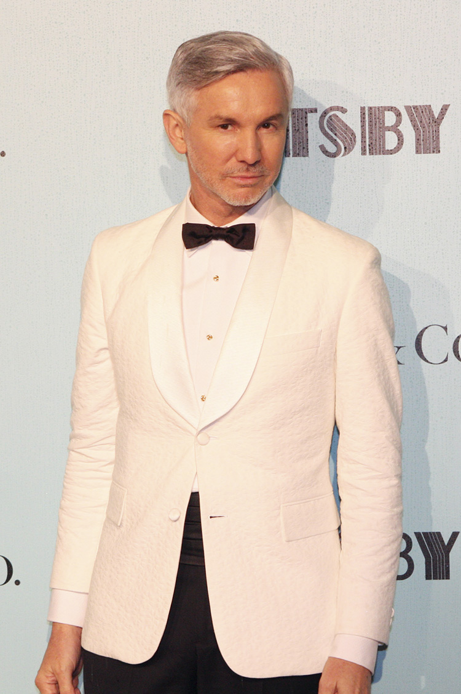

compositeur
Né le 29 avril 1959, Craig Armstrong est un Britannique
qui s’est démarqué et imposé dans le monde de la composition par sa
sensibilité et son approche à nous raconter une histoire avec la musique.
En effet, ses compositions au niveau cinématographique accompagnent et
pare à merveille l’ambiance, les lieux et les personnages. Il sait
également adapter avec brio la narration de la musique classique ou
d’opéra avec la musique moderne.
Son parcourt commence dans la musique classique, il est notamment allé
à l’académie royale de la musique. Les «fortes» notoires de sa carrière
sont par exemple : sa contribution aux arrangements de U2
, Texas, Madonna, et surtout sur les
albums de Massive Attack. Il est également compositeur
de musique cinématographique, les meilleurs exemples sont Roméo et
Juliette(1998), Moulin Rouge (2001) et la publicité
Chanel n°5 (2004).
Un de ses titres personnels le plus connus est This Love de
son premier album the space between us, qui
a été repris dans de nombreux films et série...
photo de profil officielle
réalisateur
Réalisateur, scénariste et producteur australien. Baz Luhrmann a écrit et réalisé les adaptations cinématographiques Roméo et Juliette (1996) et Gatsby le Magnifique (2013), portées par l'acteur Leonardo DiCaprio, et a réalisé les comédies musicales Ballroom Dancing (1992) et Moulin Rouge (2001), cette dernière lui valant une nomination à l'Oscar du meilleur film. Quatre de ses six longs métrages ont été sélectionnés au Festival de Cannes.
photo prise lors de la première du film
gatsby le manifique
Le film Gatsby le Magnifique ou The Great Gatsby dans
sa version originale est un film dramatique austalo-américain paru en
2013 qui a été écrit, produit et réalisé par Baz Luhrnann
. Il fait paraitre Leonardo DiCaprio en
rôle-titre, et Tobey Maguire en tant qu’apprenti auteur.
Il s’agit d’une troisième adaptation tirée du roman Gatsby le
magnifique de F. Scott Fitzgerald paru en 1925.
Cette adaptation est basée sur le travail non paru de réécriture que
Scott Fitzgerald avait commencé avant sa mort.
affiche du film lors de sa sortie en 2013
synopsis
Pendant l’été 1922, l’apprenti écrivain Nick Carraway emménage à New York, attiré par le rêve américain. L'époque est propice au relâchement des moeurs, à l'essor du jazz et à l'enrichissement des contrebandiers d'alcool… Il entend parler de son mystérieux voisin multimilliardaire Jay Gatsby, puis se fait inviter par lui à une de ses extravagantes fêtes mondaines. Nick se retrouve entremêlé entre sa cousine Daisy qui avait épousé le vieux riche Tom Buchanan, Gatsby et leurs histoires d’amour, d’illusions et de mensonges. En témoin privilégié de son temps il se met à écrire une histoire de rêves, d’amours impossibles, et de tragédies tout en nous rendant un miroir vers notre époque moderne et ses combats.
the grean light
Composé par Craig Amstrong, the grean light est un thème musical important du film, car il représente tous les espoirs et les motivations de Gatsby. C’est un thème émouvant qui nous donne une bonne image des capacitésv d’Armstrong à nous transporter dans une ambiance, un lieu, un souvenir...
écouter the grean light sur spotify«Gatsby believed in the green light, the orgastic future that year by year recedes before us. It eluded us then, but that’s no matter- tomorrow we will run faster, stretch out our arms farther... and then one fine morning-so we beat on, boats against the current, borne back ceaselessly into the past.»
the great gatsby, f. scott fitzgerald